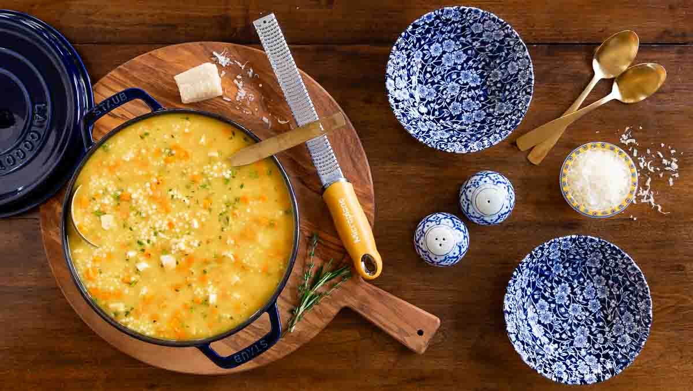

Italian Penicillin

Description
A Quick and Easy Pastina is truly one of the world’s best comfort foods. I will forever keep this recipe in my back pocket for when someone in my family is under the weather or for when we just need something comforting. Pastina is simple and flavorful and comes together in no time. Make it just once and it will be on permanent request!
Pastina is also lovingly called Italian Penicillin, and for good reason. It’s like an Italian take on chicken noodle soup. It’s good for the soul and the belly.
Ingredients
- 6 cups low-sodium chicken broth
- 1 medium yellow onion (sliced into large pieces)
- 2 carrots (peeled & sliced into large pieces)
- 2 celery ribs, (sliced into large pieces)
- 1 parmesan rind (2-in long)
- kosher salt
- 1 1/2 cup Pastina
- 1/4 cup finely chopped parsley leaves (garnish)
- grated parmesan (serving)
Steps
- Simmer the broth. In a large pot with a lid, stir together the broth, onion, carrots, celery, parmesan rind, and a pinch of salt. Turn the heat to high to bring to a boil, then lower the heat and cover. Simmer until the vegetables are very tender, 20 to 30 minutes.
- Puree the vegetables. Discard the parmesan rind, then use a slotted spoon to transfer the vegetables to a food processor. Add a couple ladles of the broth and blend until the vegetables are fully smooth. Scrape the purreed vegetables back into the pot.
- Boil the pasta. Turn the heat to high to bring the broth to a boil. Once boiling, stir in the pastina. Cook until the pasta is tender, about 3 minutes or so. Remove the soup from the heat.
- Serve. Taste the soup and adjust seasoning, adding more salt if it tastes flat. Ladle the pastina into serving bowls. Finish each bowl with a sprinkle of parsley and grated parmesan cheese and serve hot